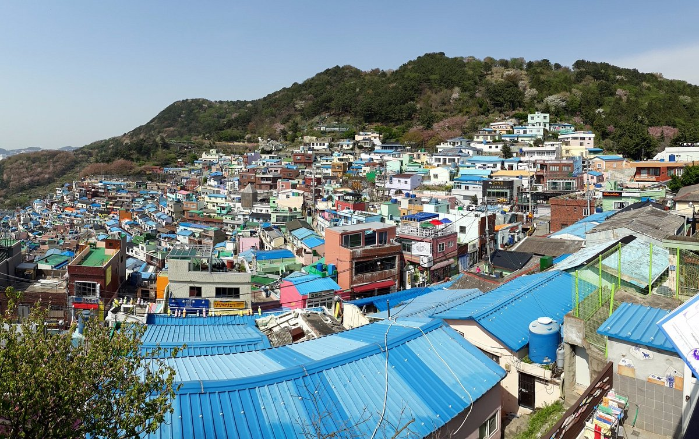

감천문화마을

감천문화마을은 1950년대 6.25 피난민의 힘겨운 삶의 터전으로 시작되어 현재에 이르기까지
민족현대사의 한 단면과 흔적인 부산의 역사를 그대로 간직하고 있는 곳입니다.
산자락을 따라 질서정연하게 늘어선 계단식 집단 주거형태와 모든 길이 통하는 미로미로(美路迷路)
골목길의 경관은 감천만의 독특함을 보여줍니다.
감천의 이런 특색과 역사적 가치를 살리기 위해 지역 예술인들과 마을 주민들이 모여 시작한 『마을미술 프로젝트』
는 감천문화마을 만들기 사업의 디딤돌이 되었으며 이 사업을 시작으로 각종 공모사업을 유치하여 2015년에는
140만여명이 방문하는 명소가 되었습니다
주변맛집
BIFF 광장
남포동 극장가가 극장들로 자리잡게 된 것은 8. 15해방 후 극장이 한 두 군데 생기면서부터 1960년대에 이르러 20여개소의 극장이 이 곳에 밀집되어 있었던 것에서 시작된다.
난 1996년부터 부산 국제 영화제(BusanInternational Film Festival)가 개최되면서
극장가를 새롭게 단장하고 그 일대를 PIFF 광장(1996. 8. 14/현, BIFF 광장)으로 명명하게 되었다
우리나라 영상문화의 저변확대와 새로운 문화관광명소로 새단장하여 국제적 문화관광 도시로서의 위상을 정립하고 시민들의 자긍심을 고취시키기 위하여
남포동 구)부영극장에서 충무동 육교까지 428m에 이르는 도로를 ''스타의 거리''와 ''영화제의 거리''로 나누어 조성하고 있다.
주변맛집